东南亚 国家／地区地图 · 看轮廓与邻近位置 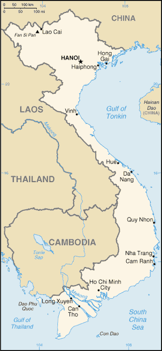
亚洲位置图 · 看大洲方位 点击地图可放大 · 国家图可能只显示地形与边界，首都方位见下文；小岛位置图可能使用圆圈或插图提示。
认识国家／地区 越南位于中南半岛东侧，沿海国土南北狭长，北部红河三角洲与南部湄公河三角洲形成两大人口和农业区域。山地与海岸相邻，是识别国土形状的线索。
认识首都／城市 河内位于北部红河三角洲，名称直接提示河流环境。它是政治与历史文化中心；南部胡志明市是重要商业都市，旧称西贡，不能因为规模或知名度而替代河内。
记忆钩子 越南北方河流间，首都河内。
容易混淆 胡志明市是大都市，西贡是旧称，不是现首都。
原亚洲手册的记忆故事 “河内”的字面意思就是 “河流之内”。 1010 年，李朝把都城迁到这里附近，称 升龙（Thăng Long）。 胡志明市更大、更商业化，但它不是首都。 本条资料来源与地图许可 国家地图：File:Vietnam-CIA WFB Map.png
大洲位置图：File:Vietnam in Asia (relief) (-mini map).svg CC BY-SA 3.0
国家／地区地图 · 看轮廓与邻近位置 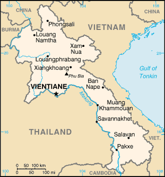
亚洲位置图 · 看大洲方位 点击地图可放大 · 国家图可能只显示地形与边界，首都方位见下文；小岛位置图可能使用圆圈或插图提示。
认识国家／地区 老挝位于中南半岛内陆，是东南亚主要国家中没有海岸的一例。山地广泛，湄公河沿西部构成部分边界；学习时用“内陆、河流、邻泰国”三条线索定位。
认识首都／城市 万象位于西部湄公河畔，与泰国隔河相望，是行政和交通中心。城市名称的中文音译容易联想到“万千景象”，而实际地理图像应是河岸首都；琅勃拉邦是历史名城。
记忆钩子 老挝没有海，万象在湄公河边。
容易混淆 琅勃拉邦是古都名城，万象是现首都。
原亚洲手册的记忆故事 万象位于湄公河左岸。 从地理上看，它和泰国东北部距离非常近。 老挝没有海，所以记住“首都贴着湄公河”很有效。 本条资料来源与地图许可 国家地图：File:Laos-CIA WFB Map.png
大洲位置图：File:Laos in Asia (relief) (-mini map).svg CC BY-SA 3.0
国家／地区地图 · 看轮廓与邻近位置 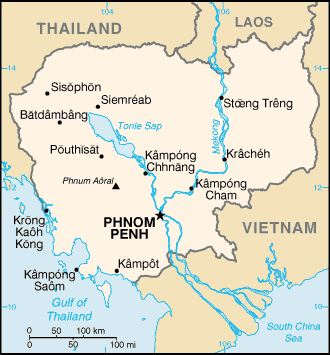
亚洲位置图 · 看大洲方位 点击地图可放大 · 国家图可能只显示地形与边界，首都方位见下文；小岛位置图可能使用圆圈或插图提示。
认识国家／地区 柬埔寨位于中南半岛南部，洞里萨湖与湄公河系统是自然地理核心。雨季水位变化影响农业与生活，吴哥文明提供重要历史背景；南部有面向泰国湾的海岸。
认识首都／城市 金边位于湄公河、洞里萨河与巴萨河交会地带，是政府与商业中心。河流交汇比“金色边缘”的字面联想更能解释城市位置；吴哥遗址附近的暹粒是旅游中心，首都则在东南部。
记忆钩子 柬埔寨河流交会处，金边。
容易混淆 吴哥和暹粒很有名，但都不是现首都。
原亚洲手册的记忆故事 金边名字与当地的 “佩恩夫人（Lady Penh）”传说和一座小山有关。 Phnom 在高棉语里有“山丘”的意思。 吴哥是古代高棉帝国核心区域，但现代首都是金边。 本条资料来源与地图许可 国家地图：File:Cambodia-CIA WFB Map.png
大洲位置图：File:Cambodia in Asia (relief) (-mini map).svg CC BY-SA 3.0
国家／地区地图 · 看轮廓与邻近位置 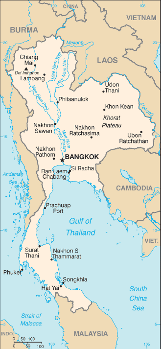
亚洲位置图 · 看大洲方位 点击地图可放大 · 国家图可能只显示地形与边界，首都方位见下文；小岛位置图可能使用圆圈或插图提示。
认识国家／地区 泰国位于中南半岛中部，国土向南沿半岛延伸。湄南河平原是重要人口与农业区，北部山地和南部海岸景观不同；地理上连接大陆东南亚与马来半岛。
认识首都／城市 曼谷位于湄南河下游、靠近泰国湾，1782年成为王朝首都。河道、寺庙与现代商业区构成鲜明城市图像；Bangkok是国际常用名，泰语城市名称及礼仪全名更长。
记忆钩子 泰国湄南河下游，首都曼谷。
容易混淆 清迈是北部名城；曼谷的泰语名称另有形式。
原亚洲手册的记忆故事 泰国人日常更常称曼谷为 Krung Thep。 它有一个极长的传统正式名称，因此经常被拿来当“超长地名”的例子。 曼谷位于湄南河下游。 本条资料来源与地图许可 国家地图：File:Thailand-CIA WFB Map.png
大洲位置图：File:Thailand in Asia (relief) (-mini map).svg CC BY-SA 3.0
国家／地区地图 · 看轮廓与邻近位置 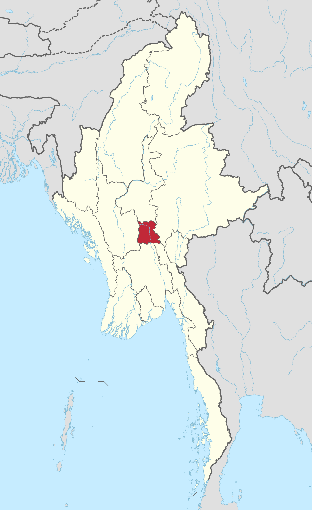
亚洲位置图 · 看大洲方位 点击地图可放大 · 国家图可能只显示地形与边界，首都方位见下文；小岛位置图可能使用圆圈或插图提示。
认识国家／地区 缅甸位于中南半岛西部，西侧面向孟加拉湾和安达曼海。伊洛瓦底江贯穿国土主要人口带，山地围绕中央低地；首都迁移使新旧地图特别容易出现差异。
认识首都／城市 内比都位于中部内陆，是2005年开始承担首都功能的规划城市。它与海岸附近的旧首都仰光在位置和形态上差异明显；记忆用“从海港向内陆迁都”，避免被仰光的知名度带偏。
记忆钩子 缅甸迁都内陆，内比都。
容易混淆 仰光是旧首都与重要城市，内比都是现首都。
原亚洲手册的记忆故事 过去的首都是 仰光 Yangon。 2005 年政府机构开始迁往内比都，2006 年正式宣布其首都地位。 Nay Pyi Taw 大意可理解为 “王都 / 国王的居所”。 城市以超宽道路和低密度布局著名。 本条资料来源与地图许可 国家地图：File:Naypyidaw Union Territory in Myanmar 2010.svg CC BY-SA 3.0 de
大洲位置图：File:Myanmar in Asia (relief) (-mini map).svg CC BY-SA 3.0
国家／地区地图 · 看轮廓与邻近位置 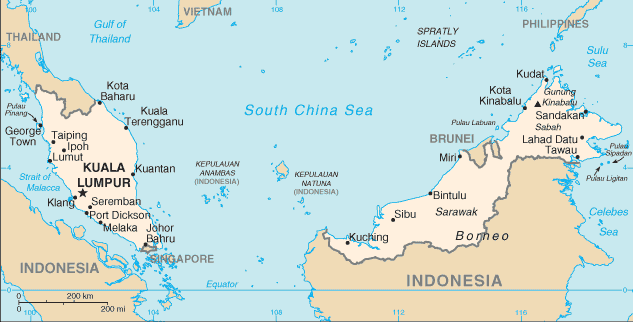
亚洲位置图 · 看大洲方位 点击地图可放大 · 国家图可能只显示地形与边界，首都方位见下文；小岛位置图可能使用圆圈或插图提示。
认识国家／地区 马来西亚由马来半岛南部和婆罗洲北部两片主要国土组成，中间隔着海域。热带森林、海岸城市与多元文化共同构成国家特点；地图不能只看半岛部分。
认识首都／城市 吉隆坡位于半岛西侧内陆，是国家首都和重要经济中心。布城是联邦行政中心，许多政府部门在那里办公；双子塔可帮助记城市形象，但首都与行政办公地点需明确区分。
记忆钩子 马来西亚首都吉隆坡，行政中心布城。
容易混淆 东马和西马同属一国；布城不取代吉隆坡的首都地位。
原亚洲手册的记忆故事 吉隆坡是国家首都。 布城 Putrajaya 是联邦行政中心。 Kuala Lumpur 的名字通常解释为 “泥泞的河流汇合处”。 双子塔让吉隆坡成为亚洲辨识度最高的城市之一。 本条资料来源与地图许可 国家地图：File:Malaysia-CIA WFB Map.png
大洲位置图：File:Malaysia in Asia (relief) (-mini map).svg CC BY-SA 3.0
国家／地区地图 · 看轮廓与邻近位置 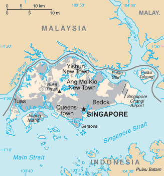
亚洲位置图 · 看大洲方位 点击地图可放大 · 国家图可能只显示地形与边界，首都方位见下文；小岛位置图可能使用圆圈或插图提示。
认识国家／地区 新加坡位于马来半岛南端，是由主岛和周边小岛组成的城市国家。海峡航运、港口和国际交通是理解其位置的核心；国土虽小，却位于重要海上通道旁。
认识首都／城市 新加坡的国家名与首都名相同，政府和城市生活集中于同一城市国家体系。市中心滨海区域、历史河岸和行政建筑形成主要识别点；它不是马来西亚的一座城市。
记忆钩子 新加坡国家和首都同名。
容易混淆 城市国家也有周边岛屿，不等于单一城区。
原亚洲手册的记忆故事 Singapore 来自梵语 Singapura，通常解释为“狮城”。 它是世界上少数典型的城市国家之一。 所以这题属于“送分题”。 本条资料来源与地图许可 国家地图：File:Singapore-CIA WFB Map.png
大洲位置图：File:Singapore in Asia (relief) (-mini map).svg CC BY-SA 3.0
首都 雅加达 → 努山塔拉（迁都过渡） Jakarta → Nusantara (transition)
国家／地区地图 · 看轮廓与邻近位置 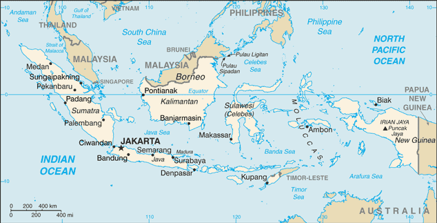
亚洲位置图 · 看大洲方位 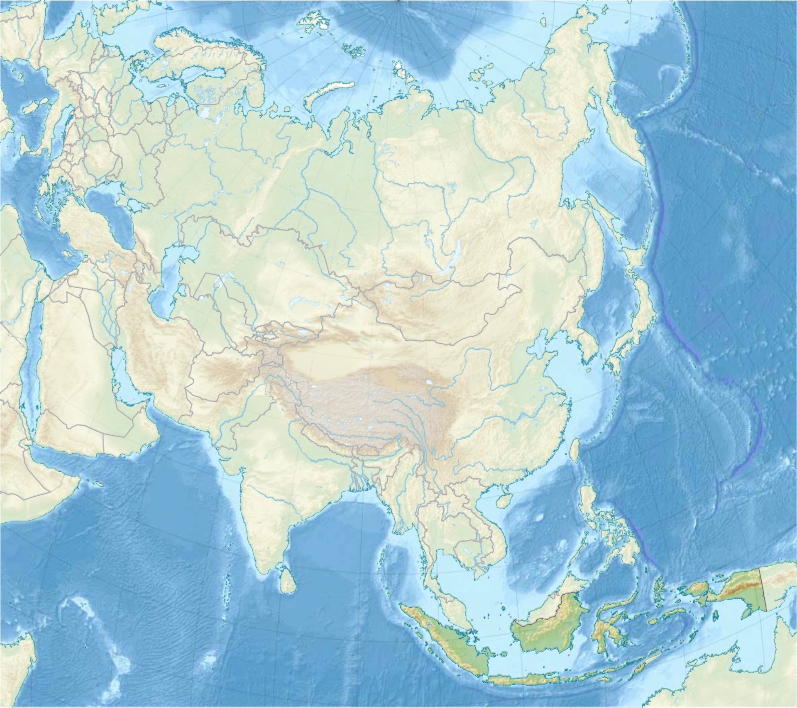
点击地图可放大 · 国家图可能只显示地形与边界，首都方位见下文；小岛位置图可能使用圆圈或插图提示。
认识国家／地区 印度尼西亚横跨东南亚与邻近海域，由众多岛屿组成，爪哇、苏门答腊和加里曼丹等是地图定位线索。人口与行政重心长期集中在爪哇，岛际距离影响国家交通。
认识首都／城市 雅加达位于爪哇岛西北岸，是长期的政府与经济中心。新首都努山塔拉位于加里曼丹岛东部，正在推进迁都；官方2026年资料提出2028年政治首都目标，需结合后续法令和执行进度阅读。
记忆钩子 爪哇雅加达，向加里曼丹努山塔拉过渡。
容易混淆 迁都正在推进，规划目标与正式生效日期要分开。
原亚洲手册的记忆故事 雅加达殖民时期曾长期叫 Batavia（巴达维亚）。 印尼正在婆罗洲加里曼丹建设新首都 Nusantara（努山塔拉）。 但截至 2026 年，印尼宪法法院相关判决与现行法律仍确认：在总统正式发布迁都决定前，雅加达继续保持首都地位。 印尼政府 2025 年规划目标是让努山塔拉在 2028 年成为政治首都。 本条资料来源与地图许可 国家地图：File:Indonesia-CIA WFB Map.png
大洲位置图：File:Indonesia in Asia (relief) (-mini map).svg CC BY-SA 3.0
国家／地区地图 · 看轮廓与邻近位置 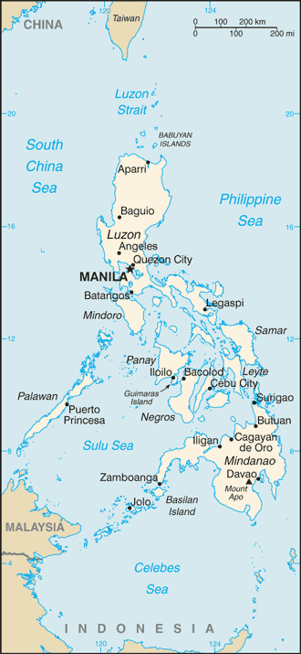
亚洲位置图 · 看大洲方位 点击地图可放大 · 国家图可能只显示地形与边界，首都方位见下文；小岛位置图可能使用圆圈或插图提示。
认识国家／地区 菲律宾位于东南亚西太平洋，由吕宋、米沙鄢和棉兰老等岛群组成。山地、火山与海岸平原并存，海洋交通联系分散岛屿；西班牙与美国时期留下文化和制度影响。
认识首都／城市 马尼拉位于吕宋岛西部、马尼拉湾岸，是国家首都。马尼拉市与更大范围的马尼拉都会区不是同一行政层级，奎松市也在都会区内；学习时同时记“吕宋西岸、湾岸首都”。
记忆钩子 菲律宾吕宋西岸，马尼拉湾找马尼拉。
容易混淆 马尼拉市与大马尼拉都会区范围不同；奎松市曾为首都。
原亚洲手册的记忆故事 西班牙殖民时期修建的 Intramuros（王城）至今仍是马尼拉的重要历史区域。 马尼拉大都会是一个巨型都市区，但“首都”仍然是马尼拉市。 本条资料来源与地图许可 国家地图：File:Philippines-CIA WFB Map.png
大洲位置图：File:Philippines in Asia (relief) (-mini map).svg CC BY-SA 3.0
首都 斯里巴加湾市 Bandar Seri Begawan
国家／地区地图 · 看轮廓与邻近位置 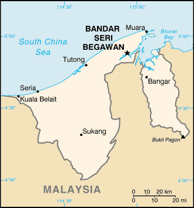
亚洲位置图 · 看大洲方位 点击地图可放大 · 国家图可能只显示地形与边界，首都方位见下文；小岛位置图可能使用圆圈或插图提示。
认识国家／地区 文莱位于婆罗洲北岸，主体国土被马来西亚的林梦地区分隔成两部分。面积较小，石油和天然气影响经济，王室与伊斯兰文化背景鲜明；不是独立的一整座岛。
认识首都／城市 斯里巴加湾市位于较大西部国土内、文莱河沿岸，是王室与行政中心。水上村落和大型清真寺构成城市记忆点；长名称可分成“斯里—巴加湾”，再配河岸位置。
记忆钩子 文莱河边的王城，斯里巴加湾市。
容易混淆 文莱在婆罗洲北岸，首都在其西部主体国土。
原亚洲手册的记忆故事 Bandar 大致是“城市/港口”。 1970 年，首都改名为 Bandar Seri Begawan，以纪念苏丹奥马尔·阿里·赛福鼎三世。 城中最著名的地标之一就是奥马尔·阿里·赛福鼎清真寺。 本条资料来源与地图许可 国家地图：File:Brunei-CIA WFB Map.png
大洲位置图：File:Brunei in Asia (relief) (-mini map).svg CC BY-SA 3.0
国家／地区地图 · 看轮廓与邻近位置 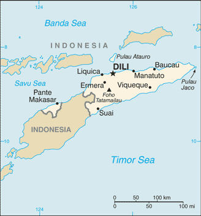
亚洲位置图 · 看大洲方位 点击地图可放大 · 国家图可能只显示地形与边界，首都方位见下文；小岛位置图可能使用圆圈或插图提示。
认识国家／地区 东帝汶位于东南亚帝汶岛东半部，还包括欧库西飞地与附近岛屿。西半岛主要属于印度尼西亚，海峡与山地影响交通；现代独立历史与葡萄牙语背景较鲜明。
认识首都／城市 帝力位于帝汶岛北岸，是政府与主要港口中心。它经历葡萄牙及后续历史阶段后成为独立国家首都；名称短，可以用“东帝汶北岸、帝字开头的帝力”建立直接联想。
记忆钩子 东帝汶，北岸帝力。
容易混淆 整个帝汶岛不是都属于东帝汶；另有欧库西飞地。
原亚洲手册的记忆故事 东帝汶在 2002 年正式恢复独立。 葡萄牙殖民历史使葡萄牙语至今仍是官方语言之一。 帝力位于帝汶岛北岸。 本条资料来源与地图许可 国家地图：File:Timor-Leste-CIA WFB Map.png
大洲位置图：File:East Timor in Asia (relief) (-mini map).svg CC BY-SA 3.0
南亚 国家／地区地图 · 看轮廓与邻近位置 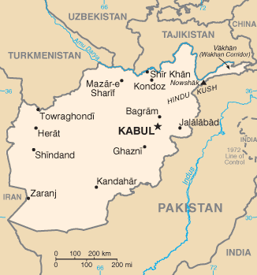
亚洲位置图 · 看大洲方位 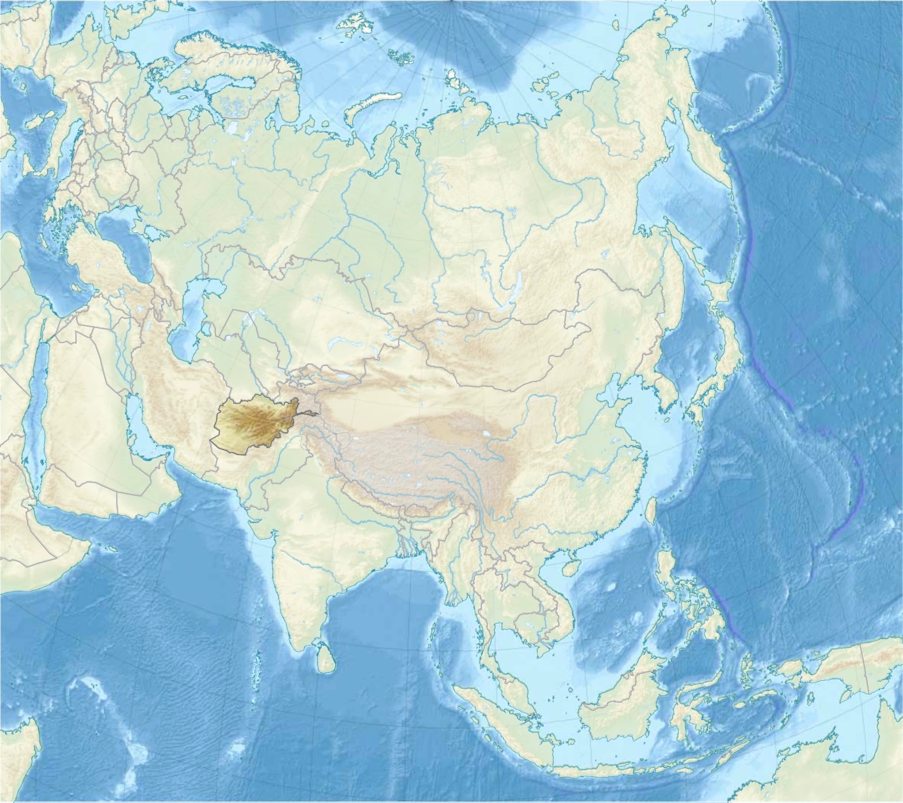
点击地图可放大 · 国家图可能只显示地形与边界，首都方位见下文；小岛位置图可能使用圆圈或插图提示。
认识国家／地区 阿富汗位于南亚分组的内陆地区，兴都库什山脉贯穿国土。山口与河谷曾连接中亚、伊朗和南亚，地形显著影响交通；在本手册采用UN M49归入南亚。
认识首都／城市 喀布尔位于东部高海拔河谷，是长期的政治与交通中心。城市靠近穿越山地的通道，河流与山坡共同塑造城区；学习时把首都放在东部谷地，而非广阔西部干旱地区。
记忆钩子 阿富汗山谷首都，喀布尔。
容易混淆 文化区域分类可能不同，本版南亚分组依UN M49。
原亚洲手册的记忆故事 阿富汗长期处于古代丝绸之路及东西交通网络交汇地带。 喀布尔周边被兴都库什山系环绕。 本条资料来源与地图许可 国家地图：File:Afghanistan-CIA WFB Map.png
大洲位置图：File:Afghanistan in Asia (relief) (-mini map).svg CC BY-SA 3.0
国家／地区地图 · 看轮廓与邻近位置 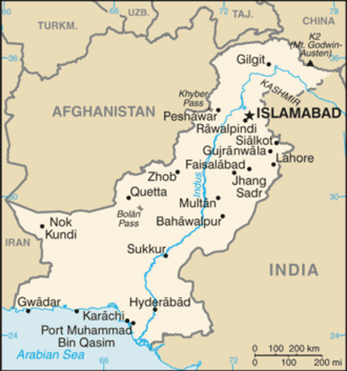
亚洲位置图 · 看大洲方位 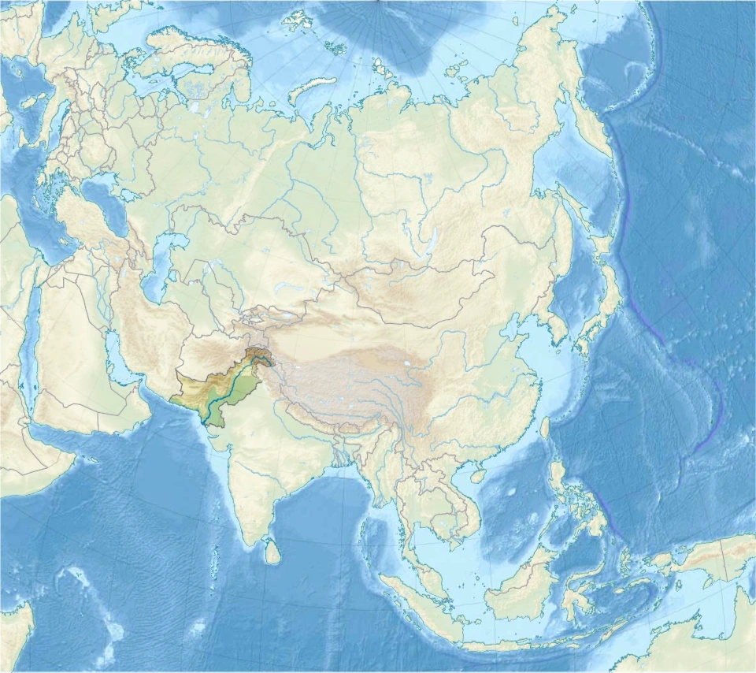
点击地图可放大 · 国家图可能只显示地形与边界，首都方位见下文；小岛位置图可能使用圆圈或插图提示。
认识国家／地区 巴基斯坦位于南亚西北部，南临阿拉伯海，印度河流域贯穿主要人口区域。北部高山与南部平原差异显著，城市位置常与河谷和区域交通联系。
认识首都／城市 伊斯兰堡位于东北部、马尔加拉山麓，是20世纪规划建设的新首都，毗邻拉瓦尔品第。旧首都卡拉奇在南部海岸；用“海港旧都、山麓新都”对照，最容易理解迁都。
记忆钩子 巴基斯坦山麓建新都，伊斯兰堡。
容易混淆 卡拉奇是旧首都与海港；拉瓦尔品第是邻近城市。
原亚洲手册的记忆故事 巴基斯坦独立后最初的首都是 卡拉奇。 后来修建了规划城市 伊斯兰堡作为新首都。 “Islamabad”可理解为“伊斯兰之城”。 本条资料来源与地图许可 国家地图：File:Pakistan-CIA WFB Map.png
大洲位置图：File:Pakistan in Asia (relief) (de-facto) (-mini map).svg CC BY-SA 3.0
国家／地区地图 · 看轮廓与邻近位置 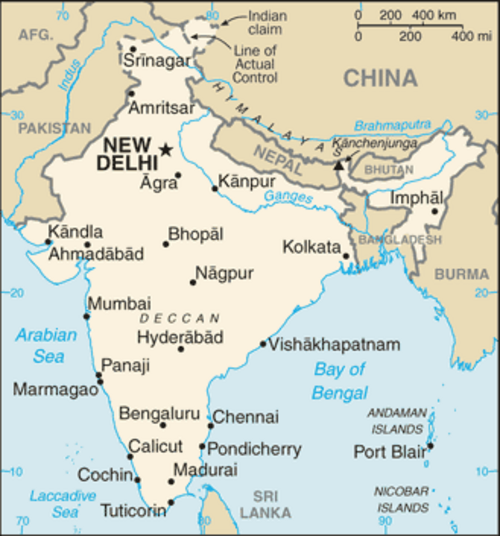
亚洲位置图 · 看大洲方位 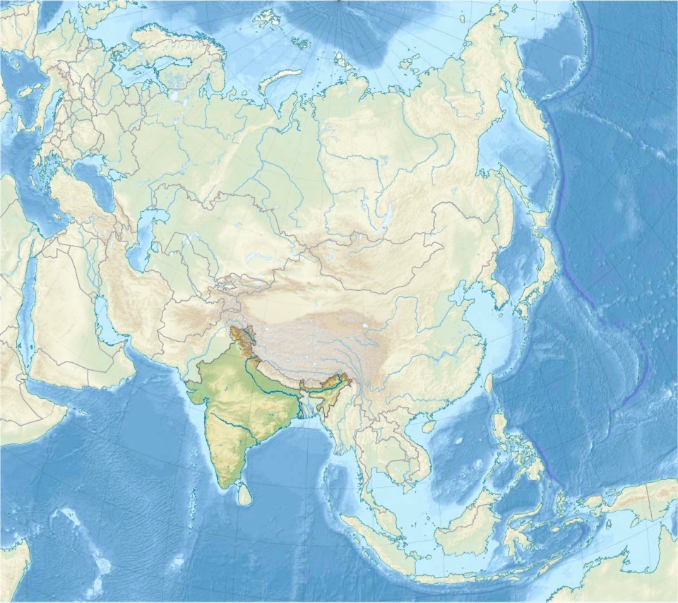
点击地图可放大 · 国家图可能只显示地形与边界，首都方位见下文；小岛位置图可能使用圆圈或插图提示。
认识国家／地区 印度位于南亚，北部喜马拉雅山地、中部平原与南部半岛形成多样地理。恒河流域和沿海城市人口集中，语言与文化差异丰富；首都应与大型商业城市分开学习。
认识首都／城市 新德里位于北部德里城市区域内，是国家政府所在地，1931年正式启用为首都。新德里与更广义的德里范围不同，规划行政街区与旧德里历史城区形成对照；孟买不是首都。
记忆钩子 印度北部德里地区，首都新德里。
容易混淆 新德里是德里的一部分，两名称范围不能完全等同。
原亚洲手册的记忆故事 1911 年，英属印度宣布将首都从加尔各答迁到德里。 新德里随后按规划建设，主要设计者包括 Edwin Lutyens 和 Herbert Baker。 今天“德里”是更大的国家首都辖区，而“新德里”是其中的国家政治核心。 本条资料来源与地图许可 国家地图：File:India-CIA WFB Map.png
大洲位置图：File:India in Asia (relief) (de-facto) (-mini map).svg CC BY-SA 3.0
国家／地区地图 · 看轮廓与邻近位置 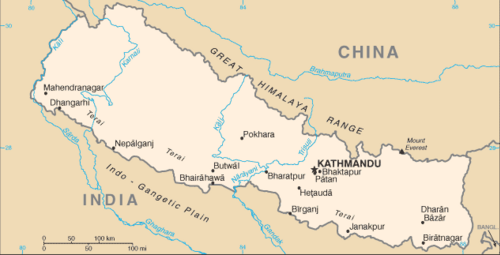
亚洲位置图 · 看大洲方位 点击地图可放大 · 国家图可能只显示地形与边界，首都方位见下文；小岛位置图可能使用圆圈或插图提示。
认识国家／地区 尼泊尔位于中国与印度之间，是喜马拉雅山地国家。北部高山与南部特莱平原高差显著，山谷承担主要城市和交通功能；不临海，位置可通过喜马拉雅中段识别。
认识首都／城市 加德满都位于中部盆地，是行政与历史文化中心。盆地内还有帕坦、巴克塔普尔等古城，宫廷广场和宗教建筑体现地方传统；首都不在最高山峰上，而在适合聚落的山间谷地。
记忆钩子 尼泊尔高山之间，谷地加德满都。
容易混淆 珠穆朗玛峰是地标，首都是盆地城市。
原亚洲手册的记忆故事 加德满都谷地长期是尼泊尔文明核心。 这里保存大量寺庙、宫殿与传统城市广场。 本条资料来源与地图许可 国家地图：File:Nepal-CIA WFB Map.png
大洲位置图：File:Nepal in Asia (relief) (-mini map).svg CC BY-SA 3.0
国家／地区地图 · 看轮廓与邻近位置 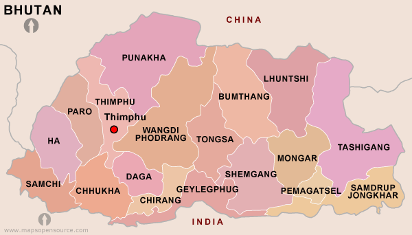
亚洲位置图 · 看大洲方位 点击地图可放大 · 国家图可能只显示地形与边界，首都方位见下文；小岛位置图可能使用圆圈或插图提示。
认识国家／地区 不丹位于喜马拉雅东段，夹在中国与印度之间，国土以山地和河谷为主。佛教文化与宗堡建筑鲜明；学习时将它放在尼泊尔以东方向，避免混为同一山国。
认识首都／城市 廷布位于西部内陆河谷，是政府与王室的重要中心。扎西确宗和现代行政街区构成城市识别点，河谷地形解释聚落展开方向；帕罗承担航空门户功能，但不是国家首都。
记忆钩子 不丹西部河谷，首都廷布。
容易混淆 帕罗机场有名，首都是廷布。
原亚洲手册的记忆故事 廷布是世界上海拔较高的国家首都之一。 不丹政府与国王办公的重要建筑 扎西却宗（Tashichho Dzong）就在廷布。 本条资料来源与地图许可 国家地图：File:Bhutan-map.gif CC BY 3.0
大洲位置图：File:Bhutan in Asia (relief) (-mini map).svg CC BY-SA 3.0
国家／地区地图 · 看轮廓与邻近位置 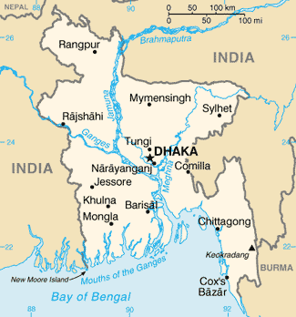
亚洲位置图 · 看大洲方位 点击地图可放大 · 国家图可能只显示地形与边界，首都方位见下文；小岛位置图可能使用圆圈或插图提示。
认识国家／地区 孟加拉国位于南亚，主要处于恒河、布拉马普特拉河与梅格纳河形成的三角洲地区。南临孟加拉湾，河流、洪泛平原和季风影响农业与城市生活。
认识首都／城市 达卡位于中部布里甘加河附近，是政治与商业中心。城市历史与贸易、手工业和近现代国家形成有关；名称短，但要把它与密集河网和三角洲国家联系，才能牢固定位。
记忆钩子 孟加拉国河网密，中心城市达卡。
容易混淆 吉大港是重要海港，不是首都。
原亚洲手册的记忆故事 达卡历史上以精细的 孟加拉薄纱 muslin闻名。 这座城市今天是全球人口最密集的大都市之一。 本条资料来源与地图许可 国家地图：File:Bangladesh-CIA WFB Map.png
大洲位置图：File:Bangladesh in Asia (relief) (-mini map).svg CC BY-SA 3.0
首都 斯里贾亚瓦德纳普拉科特 Sri Jayawardenepura Kotte
国家／地区地图 · 看轮廓与邻近位置 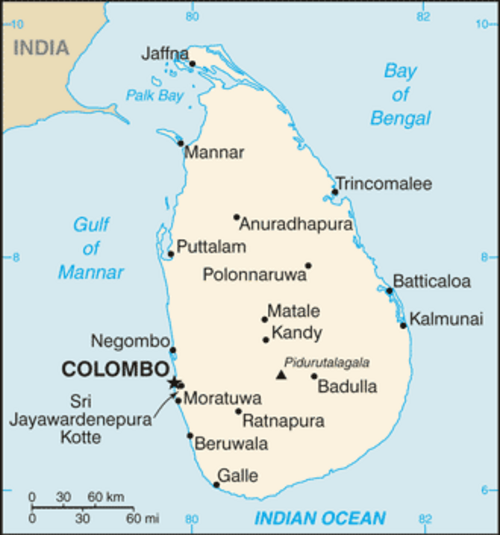
亚洲位置图 · 看大洲方位 点击地图可放大 · 国家图可能只显示地形与边界，首都方位见下文；小岛位置图可能使用圆圈或插图提示。
认识国家／地区 斯里兰卡位于印度南侧印度洋，是一座以主岛为主体的国家。中央高地与沿海平原构成主要地形，茶业与海上交流体现其经济和历史；旧称锡兰常见于旧资料。
认识首都／城市 斯里贾亚瓦德纳普拉科特位于科伦坡附近，是行政首都和议会所在地。科伦坡保留重要商业与政府功能，资料常简化写作科伦坡；学习时可先用“科特”简称定位，再记完整名称。
记忆钩子 斯里兰卡正式首都记“科特”，商业中心科伦坡。
容易混淆 科特与科伦坡功能相关但名称不同，不能只背旧简表。
原亚洲手册的记忆故事 很多人会回答 科伦坡 Colombo。 但斯里兰卡政府资料将 Sri Jayawardenepura Kotte列为行政首都；科伦坡是商业首都和最大城市。 这座城市简称 Kotte（科特）会容易很多。 1980 年代，议会迁入科特的新议会大楼。 本条资料来源与地图许可 国家地图：File:Sri Lanka-CIA WFB Map.png
大洲位置图：File:Sri Lanka in Asia (relief) (-mini map).svg CC BY-SA 3.0
国家／地区地图 · 看轮廓与邻近位置 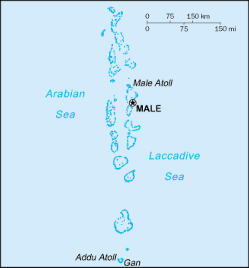
亚洲位置图 · 看大洲方位 点击地图可放大 · 国家图可能只显示地形与边界，首都方位见下文；小岛位置图可能使用圆圈或插图提示。
认识国家／地区 马尔代夫位于印度西南侧印度洋，由多组低平珊瑚环礁组成。陆地分散，岛屿与潟湖形成鲜明图像，海洋交通和旅游是重要联系；不要把度假岛名称当首都。
认识首都／城市 马累位于中部偏北的环礁区域，政府和城市活动集中在较小岛屿上，并与周边岛屿形成相连区域。它与马尔代夫读音相近，密集城市岛与分散度假岛的差异很适合记忆。
记忆钩子 马尔代夫，首都马累。
容易混淆 马累是行政城市，不是泛指全部度假环礁。
原亚洲手册的记忆故事 马尔代夫由大量珊瑚岛组成。 首都马累所在岛面积很小，却高度城市化。 国际机场主要位于旁边的 Hulhulé 岛。 本条资料来源与地图许可 国家地图：File:Maldives-CIA WFB Map.png
大洲位置图：File:Maldives in Asia (relief) (-mini map).svg CC BY-SA 3.0
国家／地区地图 · 看轮廓与邻近位置 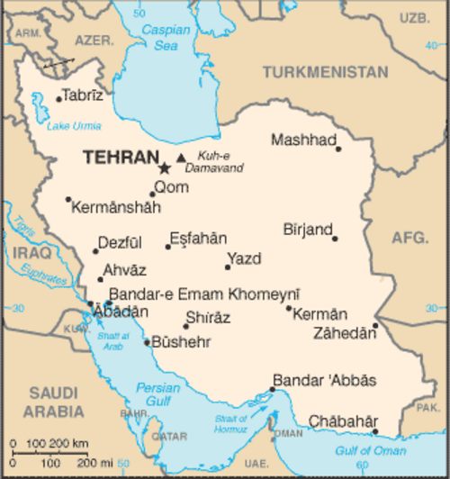
亚洲位置图 · 看大洲方位 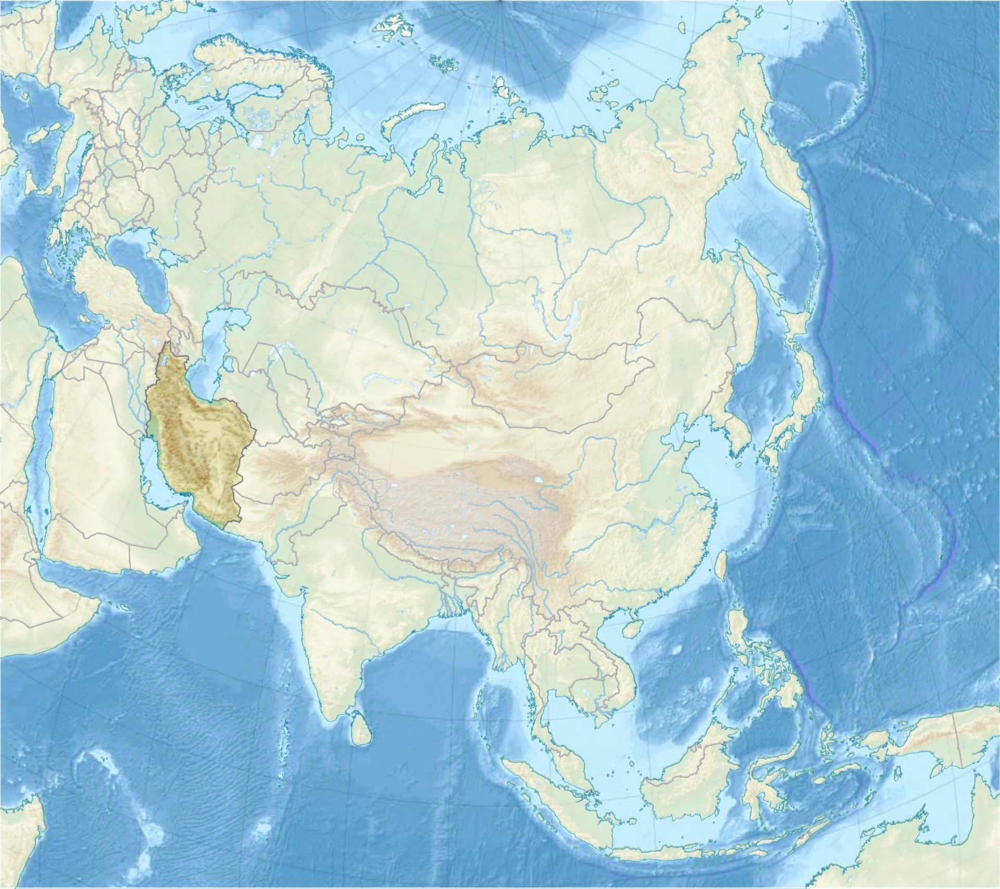
点击地图可放大 · 国家图可能只显示地形与边界，首都方位见下文；小岛位置图可能使用圆圈或插图提示。
认识国家／地区 伊朗位于西亚与南亚相接地区，本版按UN M49归南亚。境内高原、山脉与干旱盆地广泛，北邻里海、南临波斯湾和阿曼湾；波斯文化传统提供历史背景。
认识首都／城市 德黑兰位于北部厄尔布尔士山脉南麓，18世纪末成为王朝首都。它是国家行政与经济中心，城市从山麓向南延展；古都伊斯法罕很有名，但不是现代首都。
记忆钩子 伊朗北部山麓，德黑兰。
容易混淆 分组依UN M49；伊斯法罕是历史古都。
原亚洲手册的记忆故事 德黑兰直到 18 世纪末卡扎尔王朝时期才成为国家首都。 城市北侧就是厄尔布尔士山脉，天气好时城市背景可直接看到雪山。 本条资料来源与地图许可 国家地图：File:Iran-CIA WFB Map.png
大洲位置图：File:Iran in Asia (relief) (-mini map).svg CC BY-SA 3.0
西亚 国家／地区地图 · 看轮廓与邻近位置 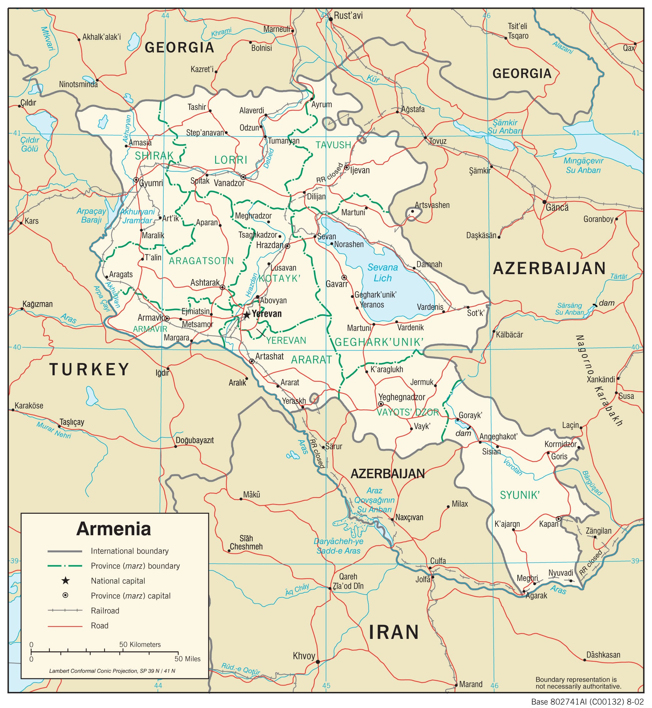
亚洲位置图 · 看大洲方位 点击地图可放大 · 国家图可能只显示地形与边界，首都方位见下文；小岛位置图可能使用圆圈或插图提示。
认识国家／地区 亚美尼亚位于南高加索内陆，山地和高原广泛，塞凡湖是重要自然地标。古老基督教传统与地区历史紧密相关；本版按UN M49归西亚，与欧洲文化联系另说明。
认识首都／城市 埃里温位于西部阿拉拉特平原边缘、赫拉兹丹河沿岸，是行政与文化中心。城市使用粉红色凝灰岩建筑的印象鲜明，附近古代城堡遗址提示悠久历史；位置接近西部边界。
记忆钩子 亚美尼亚粉红石城，埃里温。
容易混淆 南高加索本版归西亚；不要把埃里温与第比利斯混淆。
原亚洲手册的记忆故事 埃里温的历史与古代 Erebuni Fortress密切相关。 Erebuni 要塞建于公元前 782 年，是研究城市起源的重要节点。 本条资料来源与地图许可 国家地图：Armenia Transportation (2002) Public domain
大洲位置图：File:Armenia in Asia (relief) (-mini map).svg CC BY-SA 3.0
国家／地区地图 · 看轮廓与邻近位置 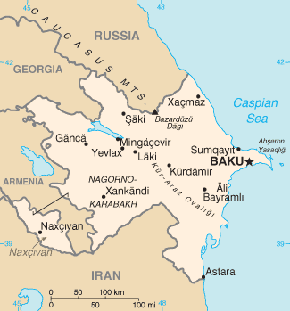
亚洲位置图 · 看大洲方位 点击地图可放大 · 国家图可能只显示地形与边界，首都方位见下文；小岛位置图可能使用圆圈或插图提示。
认识国家／地区 阿塞拜疆位于南高加索东侧，东临里海，另有纳希切万飞地。山地、沿海低地与石油资源共同构成地理印象；里海虽称“海”，并非通向大洋的普通海岸。
认识首都／城市 巴库位于里海西岸阿布歇隆半岛，是行政、港口与能源产业中心。老城与现代建筑并存，风与石油是常见城市联想；把“阿塞拜疆东岸半岛城市”作为地图定位线索。
记忆钩子 阿塞拜疆里海岸，石油城巴库。
容易混淆 里海是内陆水体；纳希切万不是首都所在地。
原亚洲手册的记忆故事 巴库位于里海西岸。 城市海拔低于海平面，是世界上海拔最低的国家首都之一。 阿塞拜疆与石油工业历史关系极深，19 世纪末巴库就是世界重要石油城市。 本条资料来源与地图许可 国家地图：File:Azerbaijan-CIA WFB Map.png
大洲位置图：File:Azerbaijan in Asia (relief) (-mini map).svg CC BY-SA 3.0
国家／地区地图 · 看轮廓与邻近位置 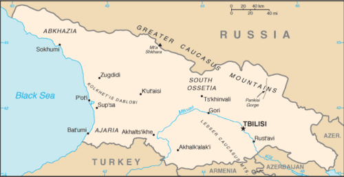
亚洲位置图 · 看大洲方位 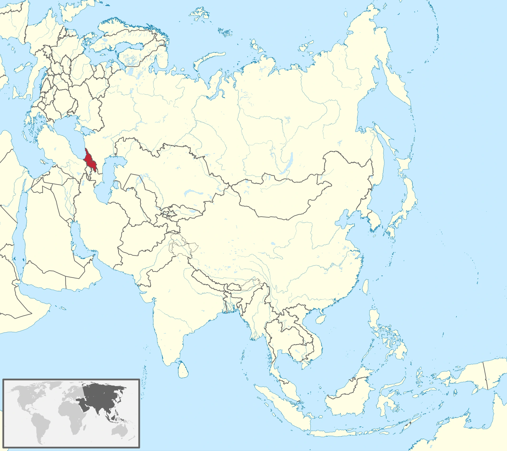
点击地图可放大 · 国家图可能只显示地形与边界，首都方位见下文；小岛位置图可能使用圆圈或插图提示。
认识国家／地区 格鲁吉亚位于南高加索，西临黑海，北侧大高加索山脉与南部山地相对。河谷通道连接东西，历史与文化具有多重区域联系；本版按UN M49归西亚。
认识首都／城市 第比利斯位于东部库拉河谷，是政治与文化中心，名称与温泉背景有关。老城依山沿河展开，欧洲与西亚通道的联系鲜明；巴统在黑海岸，是港口城市而非首都。
记忆钩子 格鲁吉亚温泉河城，第比利斯。
容易混淆 巴统是黑海港城；争议地区边界见图源。
原亚洲手册的记忆故事 “Tbilisi”与格鲁吉亚语中的“温暖”有关。 当地著名建城传说也和 温泉有关。 今天老城区仍能看到硫磺浴场。 本条资料来源与地图许可 国家地图：File:Georgia-CIA WFB Map.png
大洲位置图：File:Georgia in Asia.svg CC BY-SA 3.0
国家／地区地图 · 看轮廓与邻近位置 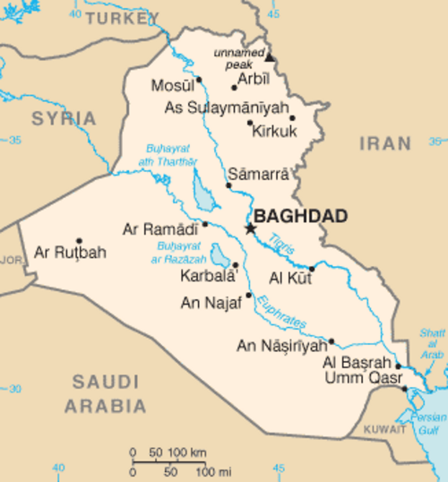
亚洲位置图 · 看大洲方位 点击地图可放大 · 国家图可能只显示地形与边界，首都方位见下文；小岛位置图可能使用圆圈或插图提示。
认识国家／地区 伊拉克位于西亚，底格里斯河与幼发拉底河贯穿主要平原，东南有短海岸通向波斯湾。两河流域的古代文明提供重要历史背景；北部山地与南部平原不同。
认识首都／城市 巴格达位于中部底格里斯河畔，8世纪阿拔斯王朝建立都城后发展为重要学术与贸易中心。河流穿过现代城区，行政功能延续；“两河国家、其中一河上的首都”可帮助准确定位。
记忆钩子 伊拉克两河文明，底格里斯河边巴格达。
容易混淆 巴格达在底格里斯河畔，不是幼发拉底河畔。
原亚洲手册的记忆故事 巴格达于公元 762 年由阿拔斯王朝哈里发曼苏尔建立为新都。 早期城市核心以著名的 “圆城”布局闻名。 中世纪巴格达曾是伊斯兰世界最重要的知识中心之一。 本条资料来源与地图许可 国家地图：File:Iraq-CIA WFB Map.png
大洲位置图：File:Iraq in Asia (relief) (-mini map).svg CC BY-SA 3.0
国家／地区地图 · 看轮廓与邻近位置 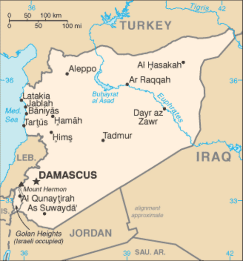
亚洲位置图 · 看大洲方位 点击地图可放大 · 国家图可能只显示地形与边界，首都方位见下文；小岛位置图可能使用圆圈或插图提示。
认识国家／地区 叙利亚位于西亚，西临地中海，内陆向东逐渐过渡到较干地区。历史商路与多层古代文明遗存丰富；首都与北部商业城市的位置需要区分。
认识首都／城市 大马士革位于西南部、巴拉达河绿洲一带，是历史悠久的城市和首都。老城街巷、宗教建筑与绿洲农业相连；名称较长，可用“大马—士革”分段，再记西南山麓绿洲。
记忆钩子 叙利亚西南绿洲，大马士革。
容易混淆 阿勒颇是重要历史城市，首都是大马士革。
原亚洲手册的记忆故事 大马士革通常被认为是世界上持续有人居住时间最长的城市之一。 倭马亚清真寺是这座城市最重要的历史建筑之一。 本条资料来源与地图许可 国家地图：File:Syria-CIA WFB Map.png
大洲位置图：File:Syria in Asia (relief) (claimed) (-mini map).svg CC BY-SA 3.0
国家／地区地图 · 看轮廓与邻近位置 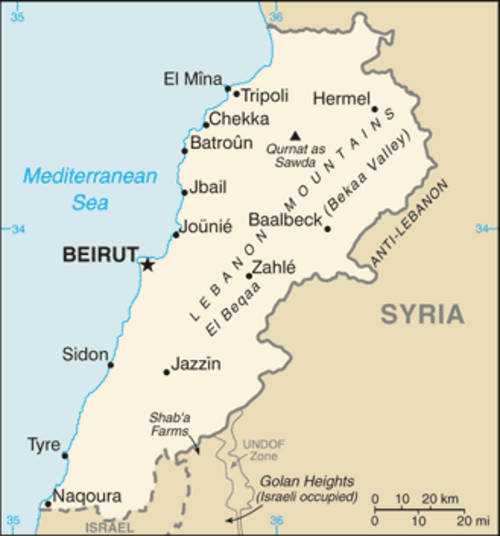
亚洲位置图 · 看大洲方位 点击地图可放大 · 国家图可能只显示地形与边界，首都方位见下文；小岛位置图可能使用圆圈或插图提示。
认识国家／地区 黎巴嫩位于地中海东岸，国土狭长，山脉与海岸平原相邻。与叙利亚、以色列相接，古代海上贸易和多种宗教文化影响地方历史；国名可与雪松形象联系。
认识首都／城市 贝鲁特位于中部海岸、向地中海伸出的半岛上，是行政、港口和文化中心。古代港市与现代城市叠加，海岸位置鲜明；记忆用“雪松国家的地中海首都”形成完整画面。
记忆钩子 黎巴嫩雪松旁，海岸贝鲁特。
容易混淆 的黎波里是黎巴嫩北部城市，但不是其首都。
原亚洲手册的记忆故事 贝鲁特位于地中海东岸。 这里自古就是重要港口和商业中心。 城市经历过多次毁坏与重建，因此历史层非常复杂。 本条资料来源与地图许可 国家地图：File:Lebanon-CIA WFB Map.png
大洲位置图：File:Lebanon in Asia (relief) (-mini map).svg CC BY-SA 3.0
国家／地区地图 · 看轮廓与邻近位置 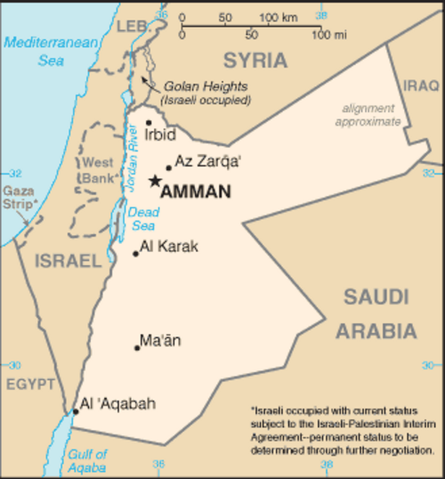
亚洲位置图 · 看大洲方位 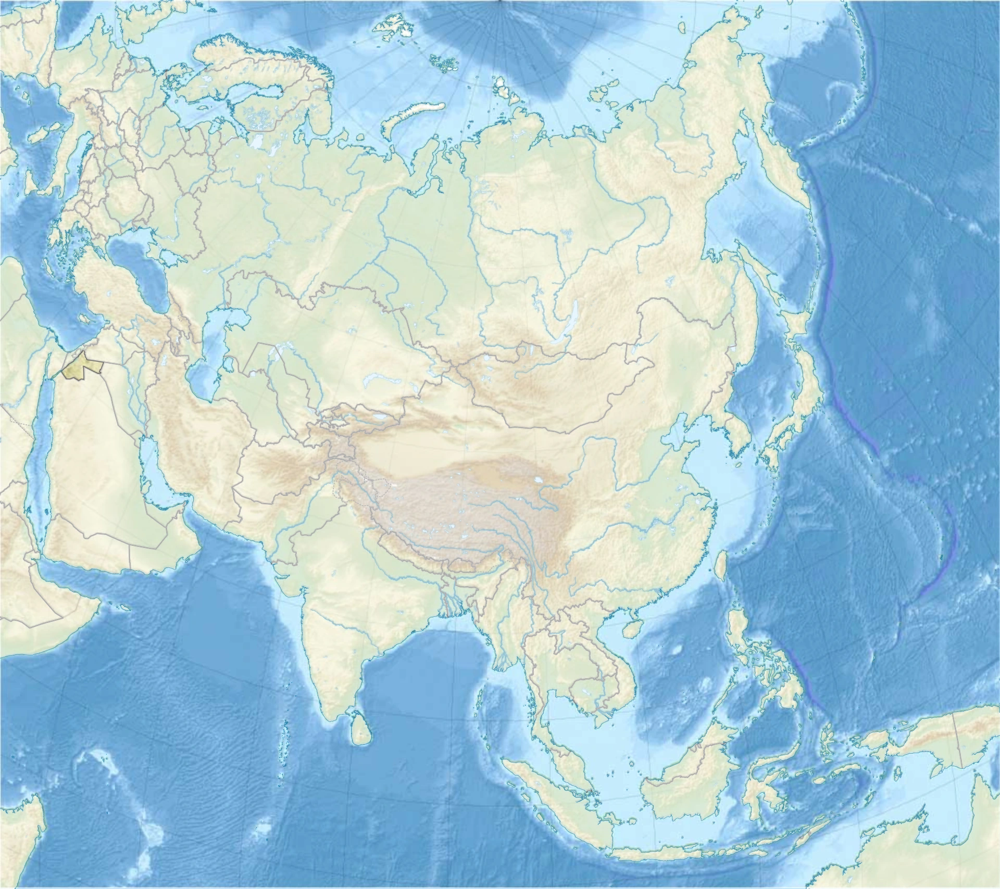
点击地图可放大 · 国家图可能只显示地形与边界，首都方位见下文；小岛位置图可能使用圆圈或插图提示。
认识国家／地区 约旦位于西亚内陆为主的地区，西侧接近约旦河与死海，南部通过亚喀巴湾获得短海岸。高地与东部沙漠差异明显，佩特拉遗址提供鲜明历史线索。
认识首都／城市 安曼位于西北部丘陵地带，是政府与商业中心，现代城区跨越多座山丘。古代遗址与现代行政街区并存；佩特拉是历史遗址，亚喀巴是海港，均不能代替安曼。
记忆钩子 约旦西北丘陵，首都安曼。
容易混淆 佩特拉和亚喀巴很有名，但首都是安曼。
原亚洲手册的记忆故事 古典时代，这座城市曾叫 Philadelphia。 安曼城堡山和罗马剧场仍保存着大量古代遗迹。 城市最初在山丘间发展，因此老城区高低起伏明显。 本条资料来源与地图许可 国家地图：File:Jordan-CIA WFB Map.png
大洲位置图：File:Jordan in Asia (relief) (-mini map).svg CC BY-SA 3.0
国家／地区地图 · 看轮廓与邻近位置 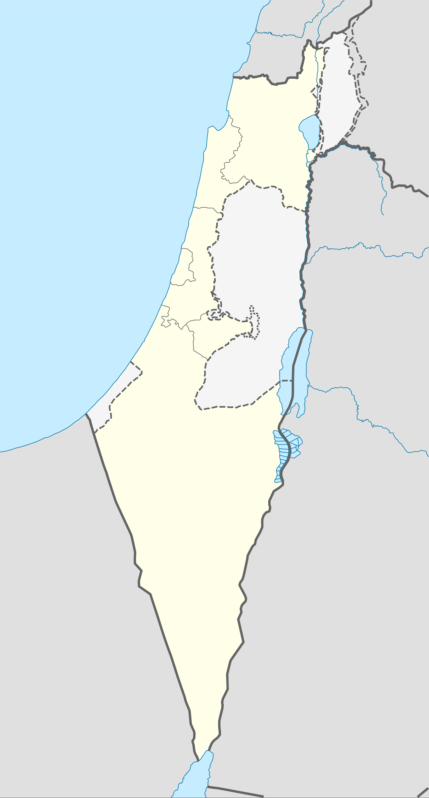
亚洲位置图 · 看大洲方位 点击地图可放大 · 国家图可能只显示地形与边界，首都方位见下文；小岛位置图可能使用圆圈或插图提示。
认识国家／地区 以色列位于地中海东岸，海岸平原、中央高地与南部内盖夫地区差异明显。涉及耶路撒冷及巴勒斯坦领土的地位问题，应结合联合国与相关各方的不同表述阅读。
认识首都／城市 以色列将耶路撒冷作为首都及主要政府机构所在地，联合国资料对此标注由以方提供，并保留其对城市地位的立场。城市具有多种宗教传统，学习首都时必须同时记住国际地位争议。
记忆钩子 以色列—耶路撒冷，名称后记“地位有争议”。
容易混淆 特拉维夫是重要城市；耶路撒冷地位并非国际一致认定。
原亚洲手册的记忆故事 以色列将耶路撒冷作为首都和主要国家机构所在地。 耶路撒冷对犹太教、基督教和伊斯兰教都具有重大宗教意义。 但耶路撒冷的国际法律与外交地位长期存在争议，因此不同资料的表述会带有说明。 本条资料来源与地图许可 国家地图：File:Israel location map.svg CC BY-SA 3.0
大洲位置图：File:Israel in Asia (relief) (wo occupied territory) (-mini map).svg CC BY-SA 3.0
首都 东耶路撒冷（首都主张） East Jerusalem
国家／地区地图 · 看轮廓与邻近位置 亚洲位置图 · 看大洲方位
点击地图可放大 · 国家图可能只显示地形与边界，首都方位见下文；小岛位置图可能使用圆圈或插图提示。
认识国家／地区 巴勒斯坦国是联合国非会员观察员国，涉及约旦河西岸与加沙地带。地域分离和政治地位背景影响行政运作；主表收录依据观察员国地位，不表示各国立场完全相同。
认识首都／城市 巴勒斯坦国主张东耶路撒冷为首都，联合国资料使用该称谓并附地位说明。拉姆安拉承担巴勒斯坦行政机构的重要职能；“首都主张”与“实际行政活动地点”须分开理解。
记忆钩子 巴勒斯坦主张东耶路撒冷，行政联系拉姆安拉。
容易混淆 不能把东耶路撒冷主张与实际办公地点简单合并。
本条资料来源与地图许可 国家地图：File:Palestine location map.svg CC BY-SA 3.0
大洲位置图：File:Palestine in Asia (relief) (-mini map).svg CC BY-SA 3.0
国家／地区地图 · 看轮廓与邻近位置 亚洲位置图 · 看大洲方位
点击地图可放大 · 国家图可能只显示地形与边界，首都方位见下文；小岛位置图可能使用圆圈或插图提示。
认识国家／地区 沙特阿拉伯占据阿拉伯半岛大部分国土，西临红海、东临波斯湾，内陆沙漠广泛。伊斯兰圣地、石油资源与绿洲聚落构成重要国家印象。
认识首都／城市 利雅得位于半岛中部内陆的内志地区，名称与花园、绿洲背景有关。它是王室与政府中心；麦加、麦地那是宗教圣城，吉达是红海港城，均不能作为国家首都答案。
记忆钩子 沙特内陆绿洲，首都利雅得。
容易混淆 麦加、麦地那是圣城，不是政治首都。
原亚洲手册的记忆故事 Riyadh 来自阿拉伯语中与“花园、绿地”有关的词根。 这听起来和沙漠国家反差很大，因此很好记。 利雅得位于阿拉伯半岛内陆。 本条资料来源与地图许可 国家地图：File:Saudi Arabia-CIA WFB Map.png
大洲位置图：File:Saudi Arabia in Asia (relief) (-mini map).svg CC BY-SA 3.0
国家／地区地图 · 看轮廓与邻近位置 亚洲位置图 · 看大洲方位
点击地图可放大 · 国家图可能只显示地形与边界，首都方位见下文；小岛位置图可能使用圆圈或插图提示。
认识国家／地区 也门位于阿拉伯半岛西南端，面向红海与亚丁湾，内陆高地与沿海低地差异明显。传统梯田和古城体现高地文化；持续冲突使政府活动地点与法定首都需区分。
认识首都／城市 萨那位于内陆高地，传统塔楼住宅和老城街巷辨识度很高，是通常列示的国家首都。亚丁是南部港口并承担部分政府活动；本版同时提示冲突背景，避免把临时驻地当成无争议迁都。
记忆钩子 也门高地古城萨那，南部港口亚丁。
容易混淆 萨那为首都常用列示；亚丁的政府角色另说明。
原亚洲手册的记忆故事 萨那老城拥有极具辨识度的多层塔楼式传统民居。 老城被列入联合国教科文组织世界遗产名录。 由于也门长期冲突，政府实际驻地与行政运作较复杂；背诵国家首都时仍通常答 萨那。 本条资料来源与地图许可 国家地图：File:Yemen-CIA WFB Map.png
大洲位置图：File:Yemen in Asia (relief) (-mini map).svg CC BY-SA 3.0
国家／地区地图 · 看轮廓与邻近位置 亚洲位置图 · 看大洲方位
点击地图可放大 · 国家图可能只显示地形与边界，首都方位见下文；小岛位置图可能使用圆圈或插图提示。
认识国家／地区 阿曼位于阿拉伯半岛东南端，面向阿曼湾和阿拉伯海，另有穆桑达姆等分离地区。沿海贸易传统、山地与内陆沙漠共同构成国家地理。
认识首都／城市 马斯喀特位于东北部海岸，山地与港湾紧邻，是王室与政府中心。历史上通过海运连接印度洋各地；把“阿曼东北海岸的山间港城”作为形象，能与阿联酋内陆或海岸城市分开。
记忆钩子 阿曼湾边山间港城，马斯喀特。
容易混淆 穆桑达姆是分离地区，首都在主体国土东北岸。
原亚洲手册的记忆故事 马斯喀特是印度洋—波斯湾航路上的重要港口。 葡萄牙势力曾在 16—17 世纪控制这里的重要港口和堡垒。 今天仍可看到沿海山地、港湾与堡垒组合的独特城市景观。 本条资料来源与地图许可 国家地图：File:Oman-CIA WFB Map.png
大洲位置图：File:Oman in Asia (relief) (-mini map).svg CC BY-SA 3.0
西亚 · AE
阿联酋United Arab Emirates 首都 阿布扎比 Abu Dhabi
国家／地区地图 · 看轮廓与邻近位置 亚洲位置图 · 看大洲方位
点击地图可放大 · 国家图可能只显示地形与边界，首都方位见下文；小岛位置图可能使用圆圈或插图提示。
认识国家／地区 阿联酋位于阿拉伯半岛东部，由七个酋长国组成，大部分海岸面向波斯湾。沙漠、海港与现代城市并存，联邦国家的首都与各酋长国中心应分别理解。
认识首都／城市 阿布扎比位于西侧沿海岛屿及周边区域，是联邦首都，也是同名酋长国中心。迪拜是更常见于旅游和商业报道的城市；将“联邦政府阿布扎比、商业联想迪拜”成对记最有效。
记忆钩子 阿联酋联邦首都阿布扎比，迪拜是另一城。
容易混淆 迪拜不是国家首都；七个酋长国共同组成联邦。
原亚洲手册的记忆故事 阿布扎比既是阿联酋首都，也是阿布扎比酋长国首府。 Dubai 更有国际知名度，但国家政治首都是 Abu Dhabi。 本条资料来源与地图许可 国家地图：File:United Arab Emirates-CIA WFB Map.png
大洲位置图：File:United Arab Emirates in Asia (relief) (-mini map).svg CC BY-SA 3.0
国家／地区地图 · 看轮廓与邻近位置 亚洲位置图 · 看大洲方位
点击地图可放大 · 国家图可能只显示地形与边界，首都方位见下文；小岛位置图可能使用圆圈或插图提示。
认识国家／地区 卡塔尔位于伸入波斯湾的小半岛上，陆地与沙特阿拉伯相接。国土干旱，城市集中在沿海，天然气资源与国际航运联系影响经济布局。
认识首都／城市 多哈位于半岛东岸海湾，是行政与商业中心。海滨道路、港湾与现代城区形成城市图像；名字短，可用“卡塔尔小半岛、东边一个多哈湾城”固定国家与首都配对。
记忆钩子 卡塔尔小半岛，东岸多哈。
容易混淆 不要把卡塔尔和同为海湾国家的巴林混淆。
原亚洲手册的记忆故事 多哈位于波斯湾沿岸。 在石油天然气繁荣之前，当地经济与珍珠采集、海上贸易关系密切。 2022 年世界杯大量比赛场馆位于多哈都会区。 本条资料来源与地图许可 国家地图：File:Qatar-CIA WFB Map.png
大洲位置图：File:Qatar in Asia (relief) (-mini map).svg CC BY-SA 3.0
国家／地区地图 · 看轮廓与邻近位置 亚洲位置图 · 看大洲方位
点击地图可放大 · 国家图可能只显示地形与边界，首都方位见下文；小岛位置图可能使用圆圈或插图提示。
认识国家／地区 巴林是波斯湾中的群岛国家，位于沙特阿拉伯东侧，通过跨海通道与其联系。主岛及周边岛屿构成国土，珍珠贸易、石油与金融背景都有历史作用。
认识首都／城市 麦纳麦位于主岛北端附近，是行政和商业中心。港口历史、传统市场与现代高层建筑并存；岛国首都集中在北部城市带，能与卡塔尔东岸的多哈形成地图对照。
记忆钩子 巴林主岛北部，首都麦纳麦。
容易混淆 巴林是群岛，卡塔尔是半岛；两者首都不同。
原亚洲手册的记忆故事 巴林是波斯湾岛国。 麦纳麦位于巴林主岛东北部，是国家金融与商业中心。 名字很特别，适合直接成对背。 本条资料来源与地图许可 国家地图：Bahrain Administrative (2020) Public domain
大洲位置图：File:Bahrain in Asia (relief) (-mini map).svg CC BY-SA 3.0
国家／地区地图 · 看轮廓与邻近位置 亚洲位置图 · 看大洲方位
点击地图可放大 · 国家图可能只显示地形与边界，首都方位见下文；小岛位置图可能使用圆圈或插图提示。
认识国家／地区 科威特位于波斯湾西北端，北邻伊拉克、南邻沙特阿拉伯。国土较小且干旱，沿海城市与石油资源关系密切；位置可用“海湾最北端附近”快速记忆。
认识首都／城市 科威特城位于科威特湾南岸，是政府与主要城市中心。城市名直接来自国家名，海港历史与现代行政建筑相连；记忆时国家加“城”，再把它定位在海湾沿岸即可。
记忆钩子 科威特加“城”，科威特城。
容易混淆 国家与城市同名体系，首都写科威特城更清楚。
原亚洲手册的记忆故事 城市位于科威特湾南岸。 “国家名 + City”就是首都名。 本条资料来源与地图许可 国家地图：File:Kuwait-CIA WFB Map.png
大洲位置图：File:Kuwait in Asia (relief) (-mini map).svg CC BY-SA 3.0
国家／地区地图 · 看轮廓与邻近位置 亚洲位置图 · 看大洲方位
点击地图可放大 · 国家图可能只显示地形与边界，首都方位见下文；小岛位置图可能使用圆圈或插图提示。
认识国家／地区 土耳其横跨欧洲与亚洲，主体位于安纳托利亚半岛，小部分在欧洲东南。黑海、爱琴海及地中海围绕国土，海峡连接区域；本版按UN M49归西亚。
认识首都／城市 安卡拉位于安纳托利亚内陆，1923年成为共和国首都。它承担政府和行政功能，伊斯坦布尔则是跨海峡的历史与商业都市；“共和国向内陆定都”是理解两城差别的核心。
记忆钩子 土耳其内陆共和国首都，安卡拉。
容易混淆 伊斯坦布尔是历史都城和大都市，不是现首都。
原亚洲手册的记忆故事 奥斯曼帝国时代的政治中心长期是君士坦丁堡/伊斯坦布尔。 土耳其共和国成立后，1923 年将 安卡拉定为首都。 安卡拉位于安纳托利亚内陆，更接近土耳其地理中心。 本条资料来源与地图许可 国家地图：File:Turkey-CIA WFB Map.png
大洲位置图：File:Turkey in Asia (relief) (-mini map).svg CC BY-SA 3.0
国家／地区地图 · 看轮廓与邻近位置 亚洲位置图 · 看大洲方位
点击地图可放大 · 国家图可能只显示地形与边界，首都方位见下文；小岛位置图可能使用圆圈或插图提示。
认识国家／地区 塞浦路斯位于地中海东部，南望埃及、北望土耳其方向。岛屿山地与平原交错，历史具有多重文化联系；国家与岛内分治背景需要分开说明，本版按UN M49归西亚。
认识首都／城市 尼科西亚位于岛中部内陆，是塞浦路斯共和国首都，城市仍有分隔背景。它不同于沿海的利马索尔、拉纳卡等港口城市；“地中海岛国、内陆首都”是很好的反直觉记忆。
记忆钩子 塞浦路斯海岛中央，内陆尼科西亚。
容易混淆 城市分隔背景及岛内争议，不能用简单统一城区理解。
原亚洲手册的记忆故事 尼科西亚位于塞浦路斯岛中央，而不是海岸。 老城保存着威尼斯时代修筑的星形城墙。 城市的现代政治分隔也使它在欧洲—西亚地理讨论中经常出现。 本条资料来源与地图许可 国家地图：File:Cyprus-CIA WFB Map.png
大洲位置图：File:Cyprus in Asia (relief) (claimed) (-mini map).svg CC BY-SA 3.0